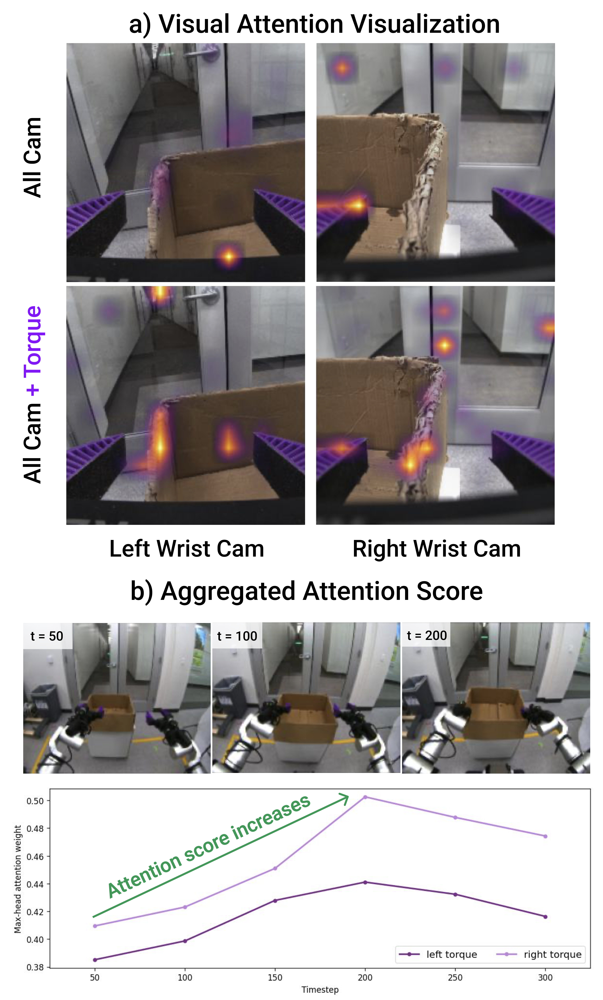

Existing teleoperation systems are often tailored to specific robot hardware and task domains, limiting
their scalability and adaptability. We present ModPack, a modular and extensible teleoperation system
designed to support diverse robot embodiments and task requirements within a unified framework.
At the core of ModPack is a self-contained wearable "backpack" that integrates onboard computation,
power, communication, and data storage. Built on top of this shared interface, the system supports
plug-and-play capability modules including joint-level teleoperation with haptic feedback, mobile
manipulation, and active perception. Experiments across two distinct robot platforms and real-world
mobile manipulation tasks demonstrate that ModPack provides a flexible and reusable framework for
data collection and policy learning and collects higher quality data than a robot-free alternative.
To support future research, we open-source the complete hardware design and software stack.
Inside the Backpack
The ModPack core is a wearable backpack base unit that moves with the operator while providing a
configurable mounting and housing structure for modular hardware components. The main backpack assembly
consists of 3D-printed front and rear panels secured with toggle latches, allowing convenient access to
the internal components. The internal volume is organized into five removable shelves that house the
onboard compute, power, and optional accessories.
Toggle the exploded view to
separate the assembly, and drag the model to orbit and inspect the components.
drag to orbit · ctrl+drag to pan · scroll to zoom
3D-Printed Hardware
The backpack is fabricated from 3D-printed parts, improving accessibility and enabling rapid modification by the research community.
The internal volume is organized into five removable shelves that house the onboard compute, power, and optional accessories. Following ergonomic observations from prior backpack-based systems, which suggest that vertically distributed loads near the thoracic region can reduce carrying strain, the PC and power banks are arranged along the operator's spine. To further reduce weight and improve thermal ventilation, excess material is removed from both the structural panels and internal shelves.
Print Settings
Material
PLA
Infill
15% · Gyroid
Layer height
0.2 mm
Walls
2 · 0.4 mm nozzle
Supports
Tree
Printers
Bambu H2D · X1 Carbon
The choice for the backpack to be fabricated in two parts is such that it can be easily 3D printed.
Hardware & software are open-sourced.
Leader Arms
We design and 3D-print two leader-arm variants: a pair of 6-DoF ARX5 leader arms for a customized mobile manipulation platform, and a pair of 7-DoF leader arms for the RB-Y1m robot. Given the CAD model of a target robot, each leader arm is constructed to be kinematically equivalent to its corresponding follower arm, following GELLO, enabling direct joint-space teleoperation. The leader arms are actuated with off-the-shelf Dynamixel servo motors.
Drag to orbit · scroll to zoom · toggle between variants below.
drag to orbit · ctrl+drag to pan · scroll to zoom
ARX5 Leader Arm
A 6-DoF leader arm kinematically equivalent to the ARX5 follower arm, enabling direct joint-space teleoperation. Motors were selected to provide the minimum torque necessary to hold the arm, with gravity compensation to alleviate operator fatigue during extended teleoperation.
Specifications
DoF
6
Actuators
Dynamixel XM540 · XM430
Structure
3D-printed PLA
Hardware & software are open-sourced.
Teleoperation
Cloth Placement
Take Elevator
Box Transfer (Top Shelf)
Box Transfer (Bottom Shelf)
Season Food
Recycle Can
For the box transfer with haptic feedback task, we show both the robot and operator as well as the POV of the robot/operator and haptic feedback to the leader arms.
Capability Experiments
(a) Cloth Placement with Active Perception
A cloth is placed in front of the robot on a counter, where a basket is either to the left or to the right
of the robot. The robot must move forward to grasp the cloth and then reverse, at which point it should
locate the basket on either side and traverse towards it, finishing the task once it places the cloth in
the basket. The main challenge is that the robot must use its active perception module to search for the
basket, which may not be in view at the start of the task.
POLICY ROLLOUTS
All cameras — success
Wrist camera — success
Head camera only — success
Head camera only — success
FAILURE CASES
Wrist cam only: loses sight of cloth during
navigation
[Head Cam] policy achieves the highest success rate, succeeding in 22/25 rollouts. [All Cam] policy
succeeds in 20/25 rollouts, while [Wrist Cam] policy succeeds on only 3/25 rollouts.
We hypothesize that the head camera performs best because the cloth admits many viable grasps,
reducing the need for close-up wrist observations, while the head camera provides depth and a
broader egocentric view for grasping and basket localization. Moreover, using only the head camera
avoids potential out of distribution wrist camera observations caused by variations in wrist pose
and cloth deformation.
In contrast, [Wrist Cam] most often fails due to placement errors, as the policy lacks sufficient
context of the basket location.
(b) Box Transfer with Haptic Feedback
The robot is required to pick up a box from a cabinet, move to a rack, and place the box onto the
unoccupied shelf (either top or bottom). This task requires whole-system coordination, bimanual
coordination, active perception to keep the box in view, and navigation to the placement location.
The haptic feedback module prevents excessive force and facilitates bimanual coordination during grasping
and transport.
ALL CAMERAS +
TORQUE
Top shelf
Bottom shelf
ALL CAMERAS
Top shelf
Bottom shelf
HEAD CAMERA ONLY
Top shelf
Bottom shelf
FAILURE CASES
All cameras: base overshoot — robot base pushes
cabinet forward
Head cam only: near collision — arm nearly collides
during placement
All cameras: bad grasp of box
All cameras + torque: drops box during transport
Policy
Successes
Success Rate
All Cameras + Torque
12 / 20
60%
Head Camera Only
11 / 20
55%
All Cameras
6 / 20
30%
Key Findings
The policy conditioned on all camera views and joint torques [All Cam + Torque] achieves the highest
success rate, succeeding in 12/20 rollouts, while [Head Cam] policy succeeds in 11/20 rollouts, and
[All Cam] policy succeeds in 6/20 rollouts.
A common failure mode of the [All Cam] policy is bad grasp poses. We hypothesize that incorporating
projected joint torques improves performance by providing a coarse alignment signal for grasp timing
and depth.
(c) Comparison with a Robot-Free Data Collection Baseline
We compare the best ModPack policy on the box transfer task, All Cameras + Torque, against HoMMI, a robot-free data collection and
policy learning framework. HoMMI utilizes two hand-held grippers plus a head camera, all with depth, to collect demonstrations. Specifically,
we collect 221 demonstrations for the box transfer task and train a HoMMI policy, rolling it out in the same way as ModPack above.
Key Findings
The ModPack policy trained on less than half the number of demonstrations than the HoMMI policy
has double the success rate.
As seen in the main video at the top of the page, we also note that the main failure mode of the HoMMI
policy is rotating past the shelf when attempting to place the box on the top.
We hypothesize that the HoMMI policy's failures are in large part due to differences in observations
between train and test time.
More Results
Attention Pattern Analysis

We provide a qualitative analysis of the model's attention patterns. As shown in the above figure, we
visualize the attention weights over image patches from the final layer of the ViT encoder for both
the [All Cam] and [All Cam + Torque] policies. The torque-conditioned policy appears to attend
more strongly to task-relevant regions, such as the edges of the box that are informative for grasping,
whereas the vision-only policy attends to less relevant regions. We also visualize the
aggregated attention weights assigned to the torque tokens in the DiT model for the [All Cam +
Torque] policy. The attention weights for both the left- and right-arm torque tokens increase as the
robot approaches the box and initiates grasping, suggesting that the policy increasingly relies on
torque information during contact-critical phases of the task.